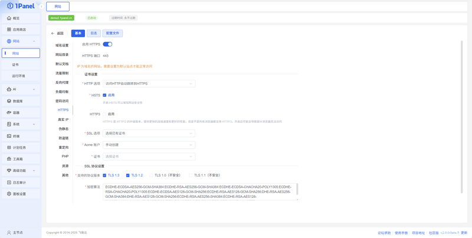
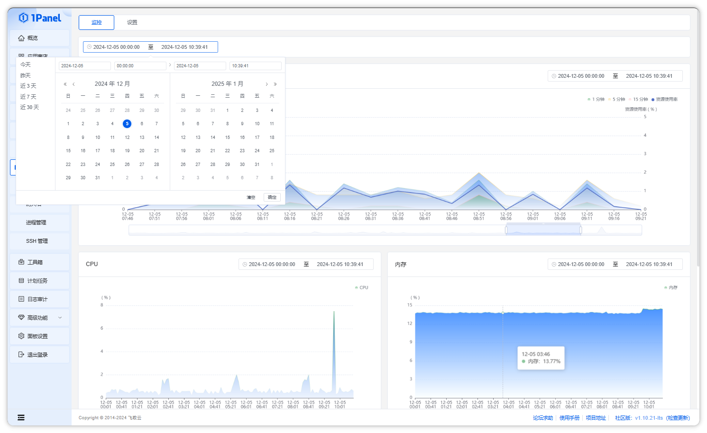
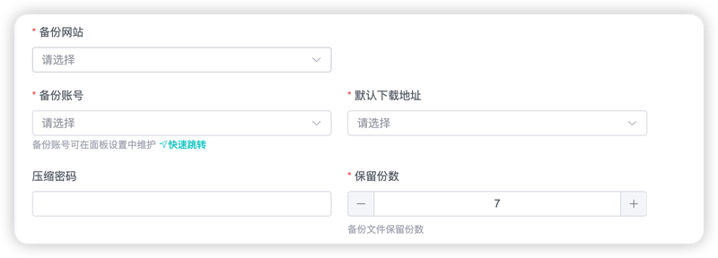

从一键安装到整机快照：1Panel 到底覆盖了服务器运维的哪几条线
把 1Panel 的能力域按部署、建站、监控、备份四条线拆开看，每个域讲清它解决什么、亮点在哪、哪些场景用得上，也顺手点出短板和适合谁。
开头：一个面板能装下多少运维动作
服务器运维这件事，往深处拆是十几条并行的作业线——装系统、配 Web 服务器、搭数据库、搞备份、盯监控、补证书……每一条线单独拎出来都能写一本书。1Panel 的野心，是把这些线收敛到同一个界面里：从 SSH 登录服务器敲下第一行安装命令，到网站上线、备份跑起来、证书自动续期，全流程都在面板内闭环。
这不是市场上第一个宣称「一站式」的运维面板，但它可能是目前覆盖面最完整、文档做得最扎实的中文开源方案之一。下面按它的四条能力域盘点，每条线讲清它解决什么、亮点在哪、哪些场景用得上。
能力域一：一键部署与应用体系——把环境准备从半天赋变成半机械动作
服务器环境搭建在很多人眼里是件碰运气的事：装完 PHP 版本不对、Docker 拉不到镜像、证书续期脚本写一半发现系统换了发行版。1Panel 用一层应用商店把这些依赖关系压平了。
它提供什么：在线安装脚本一条命令完成面板本体 + Docker 安装，交互式向导只问四个关键问题（安装目录、面板端口、安全入口、管理员账号），其余全部默认处理。装完打开应用商店，主流应用一键部署——WordPress、Typecho、Halo 这类内容站，Nextcloud、AList 这类网盘工具，Redis、MySQL、PostgreSQL 这类基础组件，甚至还有面板管理面板的场景。非交互模式通过命令行参数一键部署，CI/CD 流水线里可以直接接。
亮点在哪：每个应用都带版本锁定和启动顺序，面板知道 MySQL 要先起来再装 WordPress，也知道 Redis 的端口要留给面板自己用。升级不会悄悄拉到不兼容的大版本，这在应用链互相依赖时非常关键。
什么场景用得上：个人服务器从零到一、多台同构服务器批量初始化、给非运维同事代装环境。云厂商的一键镜像经常是固定组件 + 固定版本，换应用就得重装；1Panel 的应用商店是活的，今天装 Halo 明天换 WordPress 不用动底层。
能力域二：网站管理与 Web 底座——OpenResty 当地基，面板当脚手架
1Panel 的网站体系跑在 OpenResty 上——这是一个嵌了 Lua 运行时的 NGINX 分支，比原生 NGINX 多了一层可编程能力。你在面板里点「创建网站」「配 HTTPS」「加反向代理」，本质都是面板帮你生成 OpenResty 的 server 块配置再平滑重载。
它提供什么：静态站点、PHP 站点、Node.js 站点、Python 站点、反向代理、TCP/UDP 代理——六种网站类型覆盖绝大多数上线需求。HTTPS 配证书支持 Let's Encrypt 自动签发和续期，伪静态规则按应用模板预置，不需要再去查 Typecho 的伪静态到底是哪几行。OpenResty 设置页能改服务本身、版本检测、默认站点；防火墙和端口转发与网站配置打通，网站创建时直接放行端口。
亮点在哪：面板不会把所有配置糊成一坨。Web 底座（OpenResty 设置）、站点配置、证书、伪静态、缓存——每个模块各自可配又有联动。网站打不开时排查顺序清晰：先看列表状态 → 再看 OpenResty 容器 → 最后查配置语法，这三层关系理清了大部分问题都能定位。

什么场景用得上：同时跑多个站点的小团队、需要频繁切换 PHP/Node 版本的开发环境、对外暴露端口多到记不住的自建服务。OpenResty 作为地基意味着你不会被面板锁死——面板配完后可以直接编辑底层配置加更复杂的规则，但大多数人用不到那一步。
能力域三：主机监控与安全——从曲线看到告警，从告警看到定位线索
服务器出问题时，最先看到信号的地方往往不是业务日志，而是资源曲线突然跳水、SSH 登录失败次数暴涨、磁盘 I/O 尖峰持续不降。1Panel 把监控和安全放在同一页面组，不是巧合。
它提供什么：两个监控入口——首页圆环快照（CPU、内存、负载、磁盘 + 网络滚动曲线）和系统监控历史曲线页（五个独立图表：平均负载、CPU、内存、磁盘 I/O、网络 I/O），每个图表可单独选时间范围，磁盘和网络还能切换设备。安全侧覆盖防火墙规则管理（系统防火墙 + 面板防火墙双轨）、SSH 服务配置与会话记录、证书到期提醒。进程管理页按 CPU/内存排序、查看网络连接、定位端口占用，和监控曲线联动排查。
亮点在哪：官方文档特意区分了几组容易混的概念——负载不等于 CPU 使用率、磁盘 I/O 与磁盘占用是两回事、网络 I/O 按网卡算。这些定义被直接写进图表注释和告警阈值里，新人不会看着曲线瞎焦虑。监控设置可调整采集间隔、保留天数、默认网卡和磁盘，小磁盘机器可以把保留天数拉短避免监控数据自己把磁盘填满。

什么场景用得上：单台服务器长期无人值守、需要对团队成员开放只读监控权限、磁盘 I/O 抖动定位——这些场景用老牌监控系统（Zabbix、Prometheus）过重，1Panel 自带的曲线够用又不用再搭一套。
能力域四：备份与计划任务——把「存到哪」这件事先搞定再谈备份
备份文件往哪放，是备份体系的第一个问题，也是最容易被忽略的问题。数据库和网站与备份同盘，机器坏了全没，这不是理论上的风险。1Panel 用「备份账号」这一个页面把所有备份目标的配置集中起来，计划任务、应用备份、数据库备份、系统快照都走同一条存储管线。
它提供什么：四类备份目标——本地、对象存储（阿里云 OSS、腾讯云 COS、亚马逊 S3、七牛 Kodo、又拍云、MINIO）、网盘（OneDrive、谷歌云盘、阿里云盘）、协议存储（WebDAV、SFTP）。多个备份目标并存时有「默认下载账号」的概念，恢复操作默认走它。计划任务支持两种：定时备份（应用、数据库、整机快照可选）和定时执行 Shell 命令。计划任务跑完的执行报告直接在面板里看，不用翻服务器日志。
亮点在哪：凭证管理这一块，官方文档直接把备份账号里存的密钥定性为敏感凭证，给出三条实操守则——用最小权限子账号、密钥不进截图不进聊天记录、定期轮换。这类「官方提醒」在同类面板里很少见，说明文档团队是真在从运维视角写，不是功能说明书。

什么场景用得上：数据库和应用需要异地备份的生产环境、手里有另一台服务器想做 SFTP 备份的小团队、需要定时清理临时文件的个人服务器。计划任务 + Shell 命令的组合还能搭些小工具，比如每天把服务器 IP 变动推送到 Telegram。
短板也要说——不是所有场景它都能接住
覆盖面广的同时必然有几个边界：
- 集群能力有限：1Panel 本身是单机面板，多台服务器管理要么靠多开面板要么靠计划任务批量执行，没有原生的多节点视图和统一调度。要管几十台以上的，还是得回到专业的集群方案。
- 容器编排偏基础：应用商店本质是预配置的 Docker Compose 文件，复杂的多服务编排、健康检查、灰度发布需要自己改 compose 文件或直接上 Kubernetes。面板能帮你跑起来，但不会帮你做容器化最佳实践。
- 安全告警粒度粗：监控有曲线有阈值，但告警通知渠道有限，不像专业监控系统那样能发到多个 IM 并做聚合降噪。安全侧目前只覆盖防火墙规则管理和 SSH 记录，WAF 规则、入侵检测要自己另加。
- 社区生态仍在建设期：第三方应用模板质量参差不齐，热门应用维护得勤，冷门应用可能半年不更新。中文文档做得扎实，但英文社区活跃度明显低，非中文用户上手门槛高。
什么样的人该用它
个人站长和独立开发者：一台云服务器跑 WordPress + Typecho + 几个小服务，1Panel 是性价比最高的选择——免费、中文、文档够细，半天能把环境搭完，剩下的时间写内容。
小团队运维（2-10 台服务器）：集群还没上但单机复杂度已经高起来的阶段。用 1Panel 管单机，用对象存储做异地备份，用计划任务串起来，一个运维能盯 5-8 台机器，足够支撑小团队的业务量。
运维新手：想理解「服务器到底在跑什么」但又不想从 man nginx 读起。1Panel 把 OpenResty 配置、证书、防火墙、备份这些散在各处的东西集中到一起，每个动作都有按钮和反馈，学习路径比纯 CLI 友好得多。当然，新手用 1Panel 的前提是别把面板当黑盒——出问题时要能看懂它背后在做什么。
资料与延伸
- 详细的分类清单和完整使用指南见 1panel资源页 与 官方下载入口
- 本站完整文档站 1panel-docs.pages.dev 覆盖从快速上手到深度配置的全部主题
- 本站在 GitHub / Gitee / GitCode 三仓库同步维护，文档源码欢迎纠错与补充：官方文档仓库 · Gitee 镜像 · GitCode 同步库